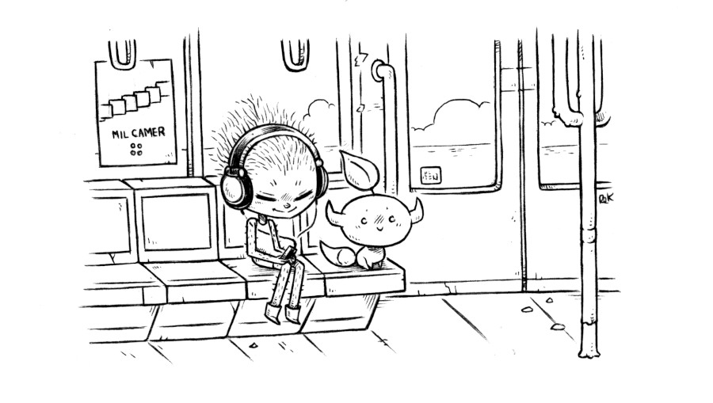
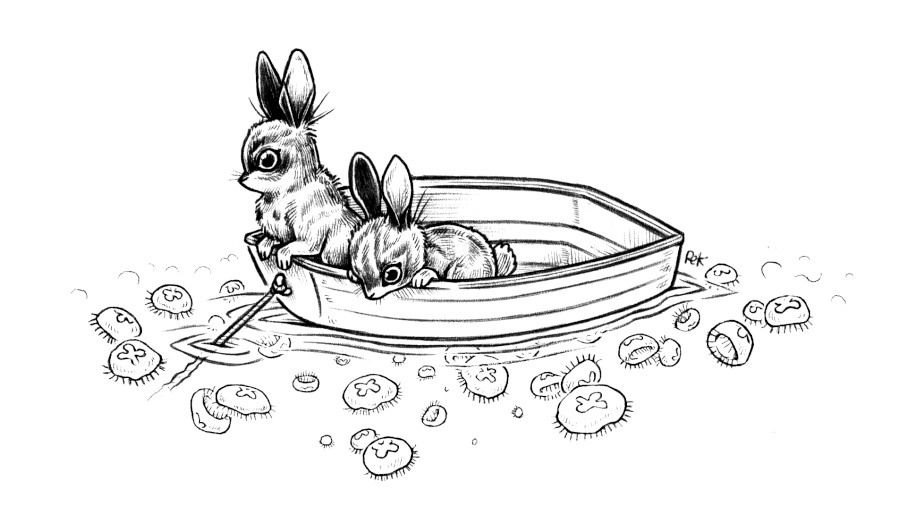
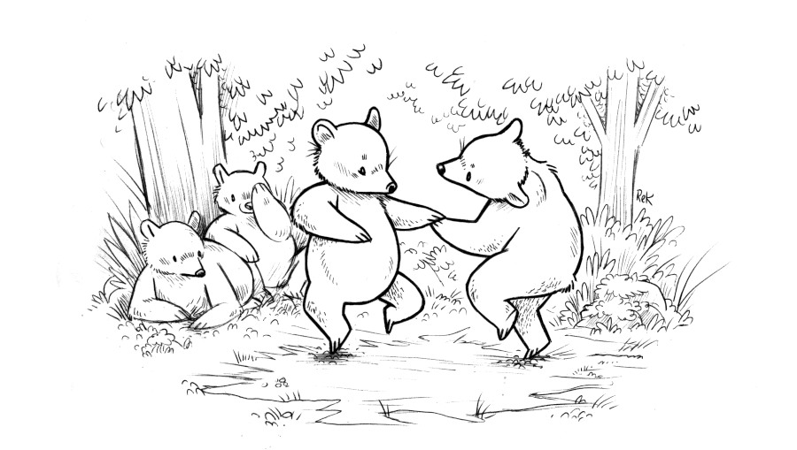
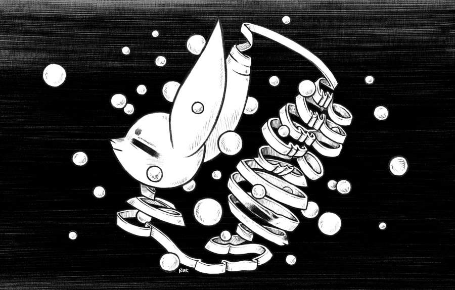
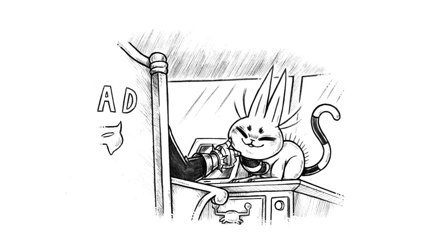

home

log
Receive monthly updates via our RSS feed, or by signing up to our monthly newsletter.
2026
July 2026

- Wiki, updated ipad media station and solar cooking experiment. Added new information for roscoe bay.
- Hakum, started a new comic sequence called Recharge, and re-did the second part of Chase.
- Yufo, made improvements to our 2022 Virtual Pet Jam game Yufo, it is now playable in the browser on itch.io.
- GrimGrains, added a recipe for soybean coffee, a very good coffee alternative.
- Thousand Rooms, released a Latin Sin Flexion version.
This month we participated in Catjam 2026 and released a humble point-and-click called Lepore Express Line. It features many cameos from all our other projects, maybe you can recognize a few? It's written in Uxntal, a concatenative assembly language for a 16-bit ordinator. Have a look at the source. Devine drew the backgrounds, while Rek drew the characters and foreground elements. It's been a while since we've collaborated on an illustration.
Internet on this part of the coast continues to be unreliable, the signal floats in and out of the anchorage, varying in strength, often gone entirely for days. When hoisting the hotspot aloft doesn't work, we stand at the top of mountains in knee-high ferns, laptops in hand, ants crawling up our calves, bald eagles circling above, waiting for the upload to complete. Progress is good, but then it halts at 85%. Come on, you can do it. A mosquito bit me. It's not all for naught, we got the latest weather report on Lynx, responded to a friend's text message, downloaded some emails, pushed changes to a few repositories.
We call them summer projects, because it seems like only the pace of long days without distractions allows for us to dedicate time to them. These projects have very little extrinsic motivation, it's just what we default to when we're left to our own devices. For Rek, it's drawing comics. For Devine, that takes the shape of linguistic experiments, for weeks now Devine has been expanding on the work of Giuseppe Peano who was fascinated by the idea of encoding logic for preservation and communication. Giuseppe dedicated lengths of his life to auxiliary languages to make his mathematical ideas accessible across language barriers; he might have been inspired by today's difficulty of replicating software proofs and crumbling toolchains. Devine has been trying to formalize into BNF what Peano left behind about Latino Sine Flexione, and expanding on his experiments with the axioms of natural numbers.
Book Club: We read The Goblin Emperor by Katherine Addison. We are reading Ulysses by James Joyce and Kafka's Metamorphosis.
June 2026

- Wiki, we had a few things fail this month, see: solar cooking experiment, and ipad media station. Also, the pressure sprayer that we use as an outdoor shower and to rinse dishes has developed a crack in its body, we smothered the gaps with big globs of LifeCalk(this quick fix has held so far).
- No Bears None, corrected some errors in the text, and the latest epub version will now display the cover.
- Rabbit Waves, completed a new comic page, the main character(rabbit) is named Hazy and the gull, Ark. The main page was re-ordered to make more room for the story pages. Colored elements in the comic are clickable and lead to knowledge pages.
- Hakum, completed a new comic sequence called Tangled.
{kind=link}
From across glass rectangles, the homba peer at the tiny ship rocked by a violent wake. The hrududu leaves its suffocating, oily embleer as it sails past Dander and Freckle, who glare back, tharn with terror.
After journeying northward for a long time, they find a quiet bay where the hrududu dare not come and drop a heavy metal hook over the side. They watch the sun set over liquid silver, knowing the elil to be far away and that before them lie the narn days, endless and warm.
They spend delightful hours under the golden radiance of Frith, rowing to the wild woods, wandering its luxurious overgrown trails, occasionally stopping for silflay. When the day wanes, they tell stories under the light of Inlé.
Dander and Freckle weren't super jazzed about using Open Office, due to it being awfully slow and heavy, so they've devised their own little spreadsheet program and for the past year, have used it to keep records of all things Hundred Rabbits. It's called Nebu, and it's got a few little improvements this month!
Dander also found time to make a beautiful little image viewer for that strange file format they store the assets for their games in, as well as a program to look at roms' metadata.
Freckle spent much of the month immersed in their conworlds, bettering their comic skills.
Book Club: We read Tales From Watership Down by Richard Adams and Sea Wolf by Jack London.
May 2026

- Wiki, documented the installation of Pino's water tank, added thermostat to engine care, and updated woodstove installation.
- Grimgrains, added a solar-roasted kinako recipe.
- Uxn, added instructions for validating builds during the bootstrap process.
- No Bears None, we released a book! Nearly everything else was pushed aside so that we could complete it.
In the last few days before our departure, we finished rebuilding our galley cabinet and installed the new water tank. As per usual, we took our bikes apart, filled our bins with fresh produce, stowed away everything, and finally, on May 17th, propelled by a strong tide and a desire to be in a quiet place, Pino flew away from the crowds of Victoria.
These days, every morning at 0400, we are awakened by purple martins perched on our lifelines singing their dawn song, after coffee we write, draw, row, wander ashore, and we try to roast new things in the sun, like soy beans.
On the 25th, we finally released the first edition of No Bears None for e-readers, a very detailed logbook about our sail from Victoria to Sitka. It's a heavily edited version of the original Victoria to Sitka logbook, with a ton of extra stuff like a 100 drawings, 17 topical chapters and 13 recipes. A big thank you to everyone who has already got their copy! We plan to release a paperback version, either late this year or beginning of 2027.
Rek designed the shirt for this year's International Workshop on Plan 9 that happened in Victoria.
Devine implemented a vector renderer, which allows us to do beautiful typesetting directly in Uxn. We used that to release two zines this month, one for helping folks who want to break into Interactions Nets, and another one called Fractions Are Everything that invite readers to look at fractions differently.
Book Club: We are reading Sailing Back in Time by Maria Coffey, Emily Wilson's translation of The Odyssey and Heart Of Darkness by Joseph Conrad.
April 2026

- Wiki, documented the replacement of Pino's headstay.
- Rabbit Waves, added a new page about Ship Lights.
- Rejoice, a bestiary of multiset combinators.
- Gaude, but.. in Peano's Latin.
- Heol, implemented combinatory logic operators.
- Hakum, added the last page for Sabotage Study.
Summer's already here, pushing us to finish a few last minute projects aboard Pino. Between all the sewing, sanding, varnishing, greasing, climbing up the mast, climbing up the mast some more, dropping tools in the water, cabinet-making(?), we're just about ready to meet it shipshape.
After taking the furler apart into a thousand little pieces and putting it all back together(without losing too many pieces), we raised our new shiny spotless jib. It looks fantastic, except that now everything else looks awfully dirty... we'll get to the rest eventually.
A few days ago, we looked at our home, with the new standing rigging, headsail, new lights, filled with food, and with less than 2 weeks to go before we cast off, and thought, okay, we have time for one last big project: ripping one of the old galley cabinets apart to rebuild it, and to install a new water tank. After ten years on Pino there are very few places aboard unknown to us, now there is sawdust on everything and we finally know what lies between the galley and cockpit locker. Before we rebuild the cabinet, we plan to pass a 100L(23 Gallon) water tank through this gap to install it in the locker.
While playtesting the new Donsol, we found a few things that could be improved with the Uxn Playdate emulator, so we fixed it and pushed a new version of Oquonie to the Catalog. The game should feel smoother, and ah, yes, there was this wall you could walk through... well, now that's fixed too.
Devine has been haunted by a cursed idea we hinted at back in February. It has come together this month into a notation called Rejoice. We've got a brief cursory description, an implementation and a few examples to demonstrate what it is. It has been fun to puzzle over what it can be used to express.
Relatedly, Giuseppe Peano whose work has directly inspired this project, wrote some of his work in a language he called as Latino Sine Flexione. The idea was to strip Classical Latin down to its simplest possible grammar while keeping its vocabulary recognizable. As a kind of tribute to Peano's work, the Rejoice documentation was translated into that language. Devine tried to emulate Peano's writing style as closely as possible, and .. yeah. Mileage may vary.
By the way, thanks to everyone who reached out with ideas for Rejoice, and helped put it all together, except for that one guy who forwarded us what ChatGPT had to say about it. Don't be that guy.
Book Club: We read Orwell's 1984, and are still reading Island by Aldous Huxley.
March 2026

- Wiki, documented the replacement of Pino's backstay, and created a project page for no bears, none.
- Hakum, completed page 10 of Sabotage Study.
- Rabbit Waves, added a comic page.
- Grimgrains, updated lactofermentation section about jars.
- Oquonie, released a new version with lots of tiny optimizations.
- Uxn, released a little emulator for the m5 stack.
We spent a big chunk of the month finishing up the new Donsol. Devine documented the development as part of a spring edition of December Adventure. All of the graphics are done and the game is fully playable, all we have left to do is to test for bugs and to write the music. It looks fantastic. We'll let you all know when we have a release date!
The goal with Rabbit Waves was always to use storytelling to teach analog seafaring skills by making it possible to navigate between different topics by selecting highlighted objects in comic strips. Rek completed the first page, featuring a rabbit sailor's morning coffee-making routine while living on a small turnip sailboat at sea. This comic is the first step towards that goal of building a larger world for Rabbit Waves.
Spring is here and we are catching up with boat maintenance. While doing checks aboard last fall we noticed that Pino's backstay had a cut, we replaced the stay this week and plan to do the same for the headstay.
This month, we also finished proofreading the revised version of the Victoria to sitka logbook, which we will now refer to as no bears, none. We still have work to do on it, but we hope to release it later this summer, or early fall. Lastly, we'd like to thank everyone who purchased rabbit stickers last month! Devine continues to draw very beautiful spirographs onto each letter.
Book Club: We are reading Island by Aldous Huxley.
February 2026

- Wiki, updated knots with a figure-eight follow-through knot, also, Pino has a new headsail!
- Pavol, created a volume control tool.
- Adelie, made it so images are drawn faster.
- Turye, added support for 24x24 pixels uf3 fonts.
- Uxntal, collected generic routines and commonly used objects into example libraries.
At the start of the month, we spent a delightful couple of days deep in the wintry and rainy Spanish countryside, gathered in a medieval monastery with the Ink & Switch team for the 10 years anniversary of the studio. We also met up with Javier and Marcelino who gave us coffee and a book on celestial navigation, we will savor a cup while studying the sky.
We asked folks on the fediverse for their favourite rabbits from Rek's recent series, and picked out the four most popular and made stickers. We received them just yesterday and they look amazing! Thanks to everyone who already asked for a sheet! We pack the letters by hand, and Dev makes a spirograph on the back of each one encoding the date in gear radius and ratio.
We've hit some annoying issues with Arch, where mainstay programs sudden change their behavior or gets abandoned like volumeicon. Being unable to control the master volume without opening a full GUI application is a pain. Devine to the rescue! An hour's work and Pavol was born! In that same vein, while working on the new version of Donsol, we realized we'd need to design fonts larger than 16 px high, something that Turye was incapable of doing, until now.
On March 6th, we'll be giving a talk at the University Of Victoria, to talk about how our 10 years of living on the water has influenced our design and development work. The event is sold out at this point, but if you signed up see you there! Oquonie for Playdate will be on Playdate's upcoming Catalog Anniversary Sale running from March 5th to March 19th.
Devine has been puzzling over an extremely odd programming language idea and is looking for some pointers, prior art, ideas, so if ferns, rewriting, confluence, linear logic, tensor and multisets mean anything to you and interests you, get in touch. Lastly, we'll leave you with this image of Polycat working on a 2009 EeePC under HaikuOS, courtesy of Tbsp!
Book Club: We finally finished reading Middlemarch by George Eliot, a very good read, we will miss it. We are also reading Red Plenty by Francis Spufford and This Is How You Lose the Time War by Amal El-Mohtar and Max Gladstone. We also watched great movies like The Battle of Algiers(1966) and Z(1969).
January 2026

- Uxn, we released a new SDL2 emulator called uxn2 to replace the ol' uxnemu!
- Wiki, updated moisture prevention underliner, chainplates(with new photos and measurements), and sewing.
- Punk Rabbits, Completed the series(103 rabbits)!
- Hakum, released a new comic page for Sabotage Study.
This is likely very obvious to most people, but recently it dawned on us that clothes are, in a certain way, open-source. We can go to a thrift store, buy a shirt, rip out the seams, study it, lay all of the pieces down over new fabric, trace the patterns, cut them out, and sew it all back together to produce a copy of that same shirt. We've been wanting to learn how to make our own clothes but didn't know where to begin, until this month. Our first project was to reproduce our hats, after the store we bought them at stopped stocking them. We bought black cotton canvas at a local fabric store, took our old hats apart and re-built them(See Rek's hat, and Dev's hat). Later, Devine did the same for our old messenger backpack.
Goblin Week, an event in which people draw goblins for 7 days, occurs on the last full week of January. Devine's entries were inspired by a passage in Samuel Butler's Erewhon, and Rek drew some spunky cartoony goblins.
Inspired by Prahou's Subversive.pics, we put together image feeds for our personal websites.
Note that we are still uploading photos to Days, our studio's image feed.
We are making progress on the Playdate version of Donsol, and the polished manuscript for the Victoria to Sitka Logbook. We do not yet know when either will be finished so let us end this updated with one last small thing: a video by VacuumBeef of Snake Game in Orca.
Book Club: This month we have reached book 8 of Middlemarch by George Eliot, the very last one. We are also reading Mémoires d'Hadrien by Marguerite Yourcenar, and Amusing Ourselves to Death: Public Discourse in the Age of Show Business by Neil Postman.
Archives
See log archives for 2025, 2024, 2023, 2022, 2021, 2020, 2019, and 2018.